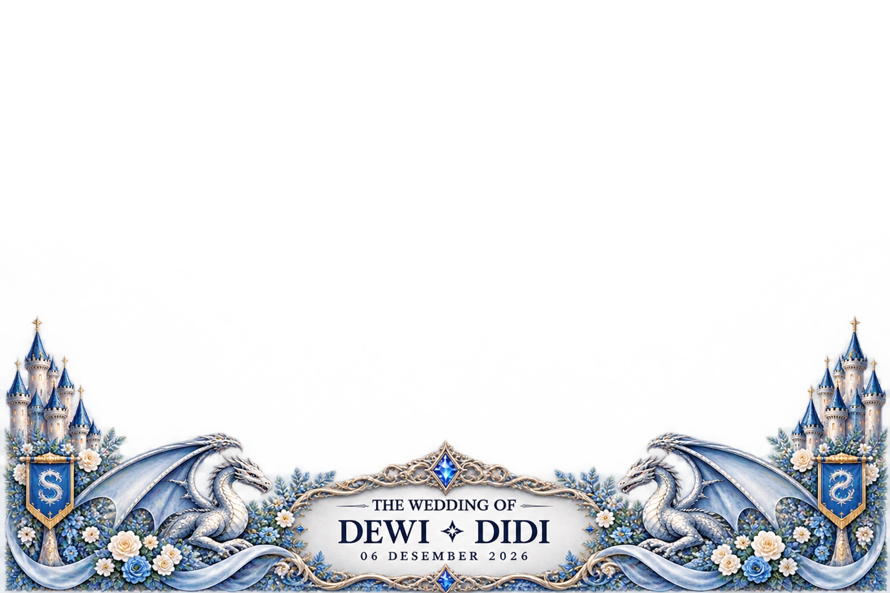

Photobooth Online
Dewi & Didi
06 DESEMBER 2026
Tata Cara Foto
- Izinkan akses kamera. Pilih “Izinkan” saat browser meminta izin kamera.
- Atur kamera. Pilih kamera depan atau belakang, lalu sesuaikan zoom jika tersedia.
- Atur posisi. Berdiri di tempat yang cukup terang dan posisikan wajah di area foto.
- Ambil foto. Tekan tombol “Ambil Foto” saat sudah siap.
- Simpan kenangan. Tekan “Unduh Foto” untuk menyimpan hasilnya ke perangkatmu.
The Wedding Of
Dewi & Didi
06 DESEMBER 2026
Abadikan momen bahagia bersama kami.
Siapkan senyum terbaikmu! ♡

Zoom
Tekan “Mulai Photobooth” untuk mengaktifkan kamera.
Posisikan wajah agak di atas tengah agar tidak tertutup papan nama. Gunakan cahaya cukup untuk hasil lebih tajam.